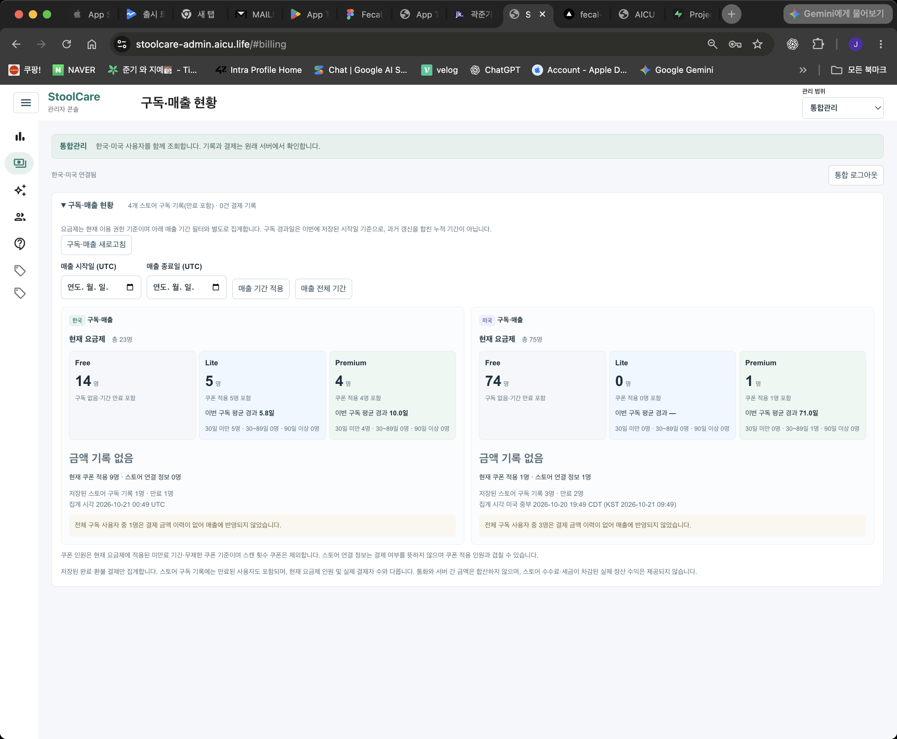
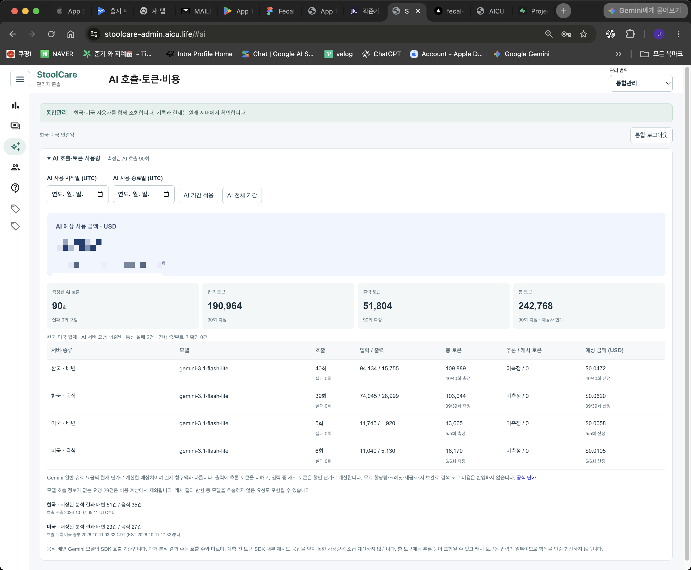
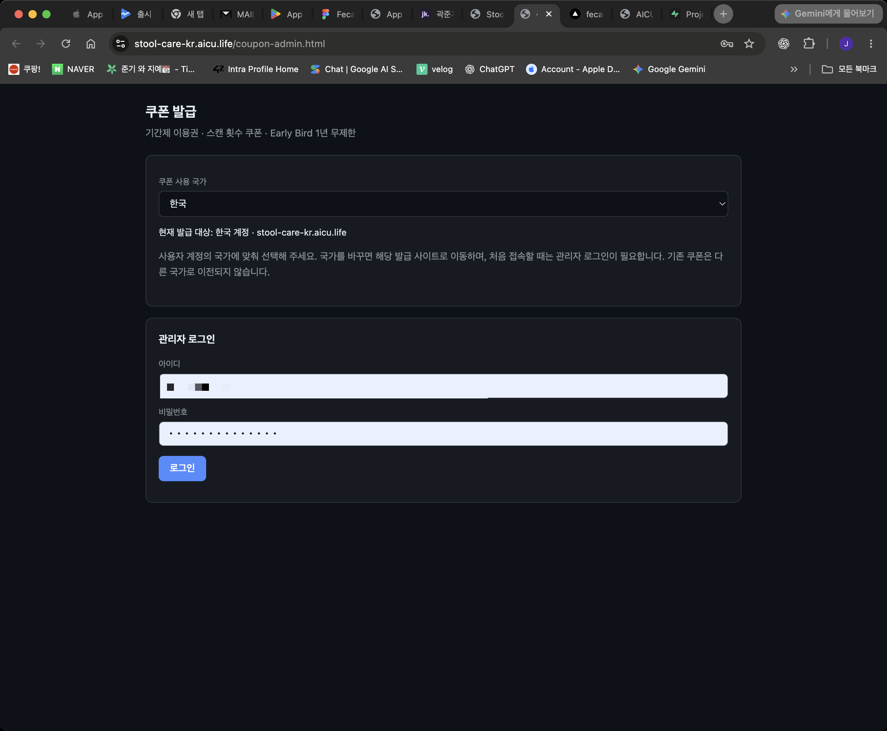
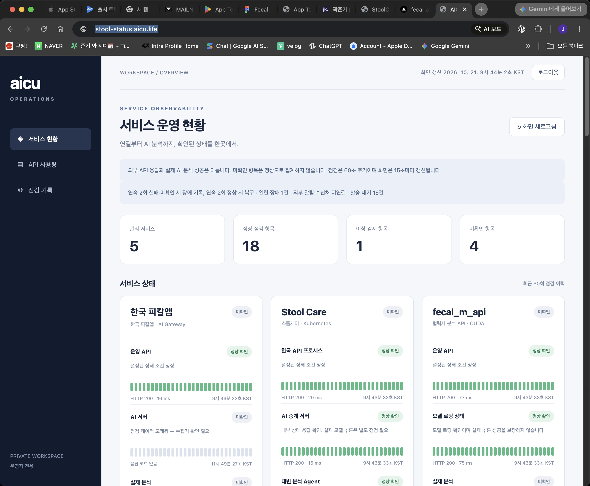

01 문제 PROBLEM
한국·미국 서비스가 각각 다른 관리자 도구로 분리되어 있어, 사용자 한 명을 찾으려고 창 두 개를 띄우는 상황이 반복됐습니다. 통합 조회를 지원하되 국가별 데이터는 분리해 표시해야 했습니다.
02 결정 DECISION
한 화면에 양쪽 API를 묶음
사용자 기록, 구독·매출 현황, AI 호출·토큰·비용, 문의 관리, 쿠폰 관리를 하나의 웹에 모았습니다. 국가별 지표를 좌우로 나란히 보여주고, 조회·내보내기는 10,000건 상한, 사진 ZIP은 100장·100MB씩 분할해 내려받도록 했습니다.
독립 도메인에 배포, 세션 검증 별도
React·TypeScript·Vite·MUI로 운영 화면을 구현해 서비스 앱과 분리된 별도 도메인에 배포했습니다. 배포 뒤 상태·접근 체크 17개 항목으로 세션 검증을 돌렸습니다.



03 구조 ARCHITECTURE
상자에 마우스를 올리면 하는 일과 만든 내용이 나오고, 예시 버튼을 누르면 요청 하나가 어떤 순서로 처리되는지 단계별로 볼 수 있습니다.
04 결과 RESULT
한국·미국 사용자·기록·구독·쿠폰·문의를 한 웹에서 조회하고, CSV·사진 ZIP으로 내보낼 수 있게 묶었습니다. 창 두 개를 띄우던 운영 흐름이 하나로 줄었습니다.
2026.10.11 배포 점검에서 상태·접근 확인 17개 항목이 통과했습니다. 이는 배포 체크 범위이며 사용자 시나리오 전체 테스트는 별도입니다.

05 근거 EVIDENCE
- 역할
- 관리자 웹 개발 / 배포
- 집중한 지점
- 양국 API 묶기 · 구독·쿠폰·문의 관리 · CSV 내보내기 · 배포 체크
- 기술
- React · TypeScript · Vite · MUI
- 공개 범위
- 회사 실사용 데이터는 비공개입니다. 스크린샷의 ID·이메일·금액은 모자이크 처리했어요.
- 확인 자료
- 2026.10.11 배포 점검 기록 기준. 소스는 사내 저장소에서 관리합니다.
배포 점검 · 2026.10.11 · 상태·접근 체크 17개 항목 통과. 사용자 시나리오 전체 테스트는 별도. 소스는 사내 저장소.